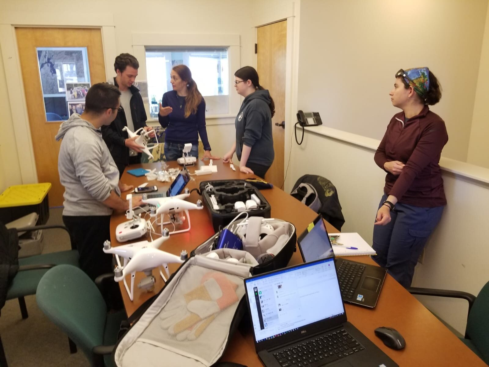
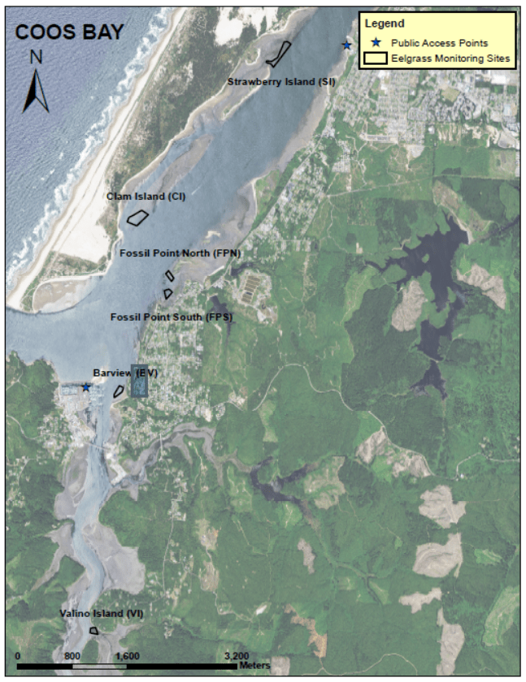
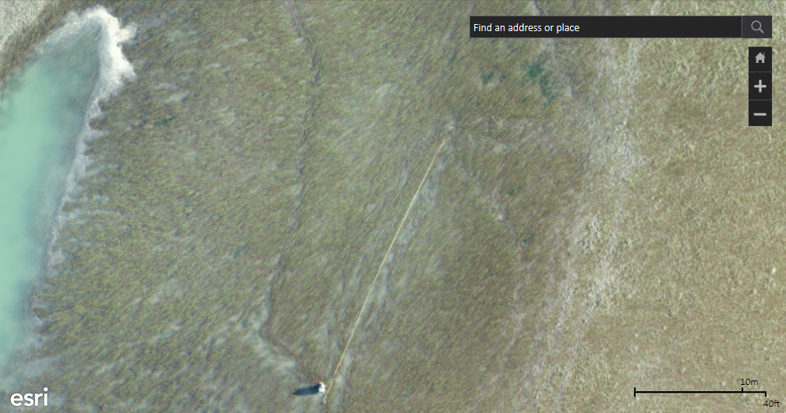
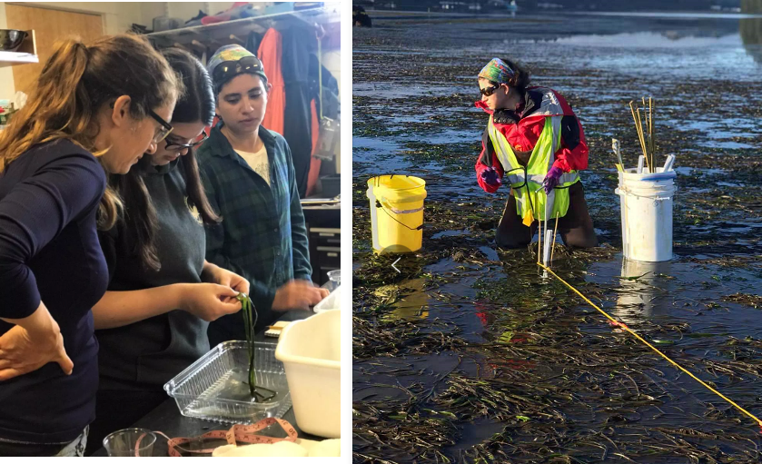
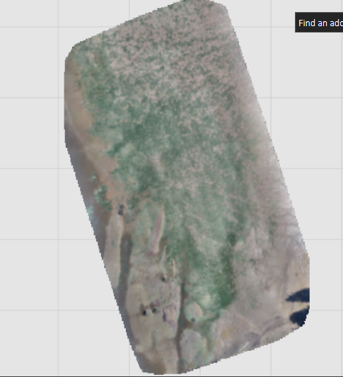

2 minutes read
The second fieldwork experience of eelgrass mapping was successful this June. This trip was made possible through a $1.3 million grant funded by the National Science Foundation (NSF). On this trip, the Citizen Science GIS drone team: Dr. Bo Yang, Michael Feinman, and Hunter Searson worked collaboratively with researchers from Cornell University and Oregon State University, Dr. Fiona Tomas Nash, Dr. Lillian Aoki, and Korrina Wirfs.
UCF drone mapping team, team from Cornell University and Oregon State University
Our team first arrived in Coos Bay on June 14th. On June 15th, we began training the Oregon team on drone set-up, safety procedures, and practiced flying. This drone and GIS training is important because it will allow for our sites to use drones in eelgrass data collection and exploration when the UCF team is not on site.

Hands on drone assembly instructionFossil Point was our first site at Coos Bay and was mapped on June 16th.
Barview was mapped on June 17th.
On June 18th, we traveled to Yaquina Bay to map Sally's Bend North and Sally's Bend South. We also began GIS training after we returned from the sites.
Idaho Flat was mapped on June 19th


Portion of Sally's Bend North eelgrass bed including one of the sub-tidal transects
This fieldwork included some new challenges for our team: dense and low-lying fog, deep mud flats, no-fly zone limitations, and mechanical issues. Being a scientist/researcher means being prepared for adversity in the field. It is important that we were able to evaluate our situations and adjust to a change in circumstances.

Fiona, Korrina, and Lillian looking at lesions on eelgrass samples (left); Lillian in the fieldwork (right)
All mapping and drone training was performed by certified FAA part 107 pilots with legal flight authorization.
Our next trip will be to Bodega Bay and Tomales Bay, California, where we will be working with University of California Davis to make more eelgrass maps!

Sally's Bend South 100ft orthomosaic generated through Drone2Map rapid processing
Fieldwork in inter-tidal area with drone mapping
Stay updated on all of our exciting work at Citizen Science GIS by following us on our social media: Instagram, Twitter, Facebook, and Linkedin.
Updated: July 01, 2019